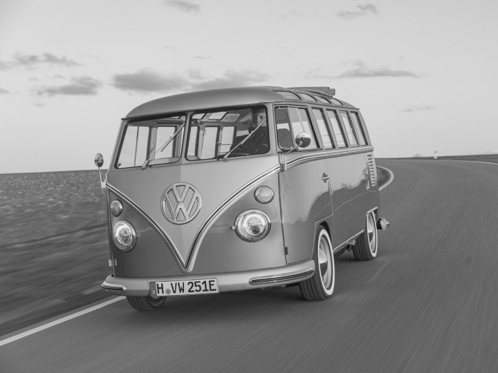
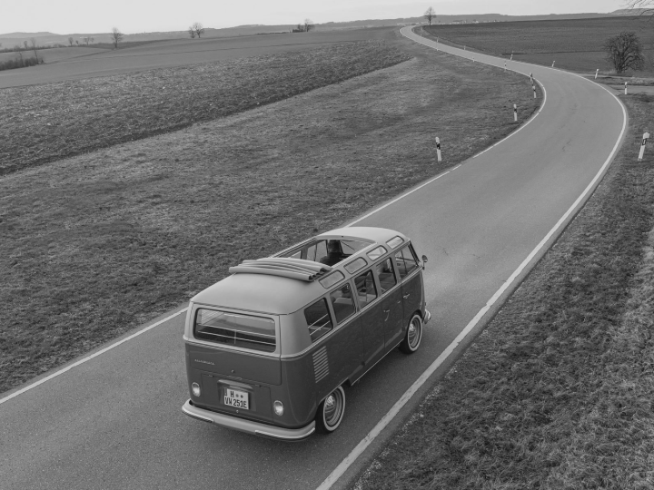
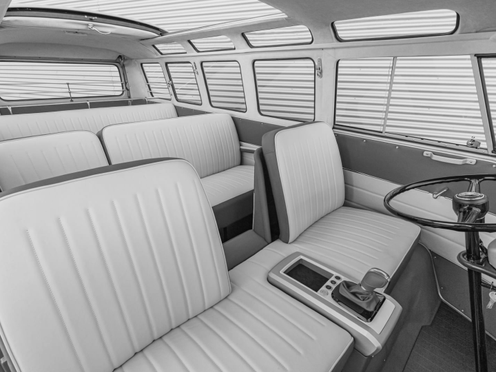
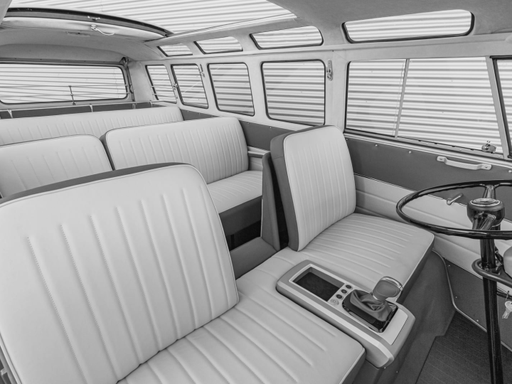
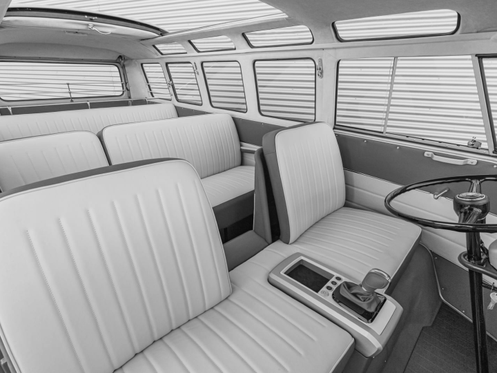

VW T1 Electro: Отделение Volkswagen Commercial Vehicles
представило концепт e‑Bulli: классический вэн T1 1966 года с электрической силовой установкой. По словам
производителя, проект получит коммерческое продолжение, и через фирму-партнера eClassics наборы для конверсии
микроавтобусов в электрокары и уже готовые машины будут продавать частным клиентам.
плюсы
+ Экологичный
+ Экономный
+ Тихий
МИНУСЫ
- Дорогой
- Подзарядка


Галерея
Пресса
Engadget: VW’s e-BULLI concept shows how your classic van can become an EV.
Drive.ru: Вэн Volkswagen e-Bulli скрестил классику с современной техникой.
theDRIVE: The Volkswagen E-Bulli Concept Shows How You Can Electrify the Iconic Bus for $70,000
Читать

 
